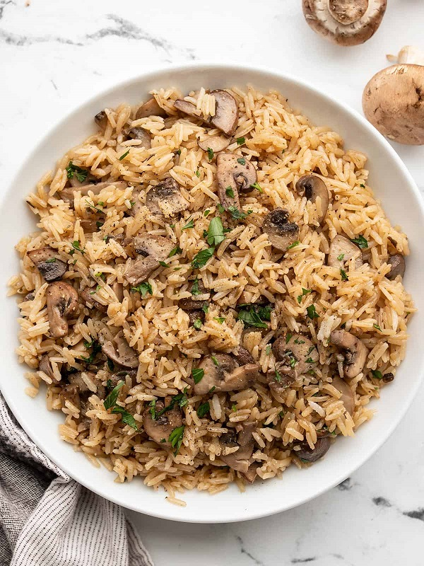

Mushroom Rice

Description
This simple mushroom rice combines earthy mushrooms, savory garlic, rich butter, and flavorful vegetable broth for a simple yet flavorful side dish.
Ingredients
- 8 oz. mushrooms
- 2 cloves garlic
- 3 Tbsp butter, divided
- 1/4 tsp dried thyme
- 1/4 tsp freshly cracked pepper
- 1/8 tsp salt
- 1 cup long-grain white rice (uncooked)
- 1.5 cups vegetable broth
- 1 Tbsp chopped fresh parsley (optional)
Steps
- Slice the mushrooms and mince the garlic.
- Add the mushrooms, garlic, thyme, pepper, salt, and 1 Tbsp butter to a deep skillet. Sauté over medium heat until the mushrooms have released all of their water and the water has evaporated off the bottom of the skillet.
- Add the rice and 2 Tbsp butter to the skillet and continue to sauté for about two minutes more.
- Add the vegetable broth to the skillet and stir to dissolve any browned bits off the bottom of the skillet.
- Place a lid on the skillet, turn the heat up to medium-high, and allow the broth to come up to a full boil. When it reaches a full boil, turn the heat down to low, or just above low, so the broth remains simmering.
- Let the rice simmer for 15 minutes without stirring or removing the lid. After 15 minutes, remove the pan from the heat and let the rice rest for another 5 minutes, without removing the lid.
- Finally, remove the lid and fluff the rice with a fork. Taste and add salt or pepper, if desired. Top with chopped fresh parsley as a garnish.